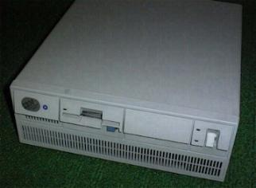

Phil Storrs PC Hardware book
The history of the Personal Computer system
The term Personal Computer was first used by IBM as a name for the computer
that marked IBMs entry into the market for desk top computers. The IBM
PC, released in late 1981, used an Intel 8088 microprocessor chip
and used PCDOS as its operating system.
This was not the first Personal Computer, Apple, Commodore, and
Tandy to mention only the most successful manufacturers, had been marketing
personal computers based on various eight bit processor chips since about
1975. The PCDOS operating system was made available to any computer manufacturer
that wished to use it under the name MSDOS and soon many manufacturers
were producing DOS computers that were more or less compatible with the
IBM PC.
Where do personal computers fit into the computer scene ?
Main Frame
- Many users share the same computing power, and mass storage.
- Users access a central processor unit via "dumb terminals"
- Provide vast data storage space.
- May be linked to terminals all over the country or even the world.
Mini Computer
- A small Main Frame system.
- Limited to less users and less storage space
- Usually confined to users in a single organisation at the same location.
- May use the resources of a Main Frame computer for some storage and communications
Personal Computers
- Desk top computers (stand alone), first appeared about 1975.
- Today, Personal Computers have taken over many of the roles played by Mini
Computers in the past.
Definition: A personal computer is a stand-alone computer, used
by one person at a time.
The first readily available personal computers were produced in 1975
to 1977 and were the:
- Tandy TRS 80
- Apple II (two)
- Commodore Pet
Personal Computers before the IBM PC
These first generation Personal Computers used an 8 bit microprocessor
chip and so were limited to a maximum of 64K Byte of memory. This limit
was imposed by the 16 bit Address Buss available to 8 bit processors (216
= 65356 or 64K). The opening user interface was BASIC, a high level computer
language, and applications were generally written in this language and
loaded and run from the Basic Interpreter built into the computers firmware.
Many of these early Personal Computers used different microprocessor
chips and different Microprocessors use quite different "machine codes"
and programming techniques. Programs were not transportable from one brand
of computer to another. Two of the most popular computers used the Z80
or the 6502 processors. Tandy TRS 80 = Z80 and the Apple II = 6502. Different
brands of computer used different data storage techniques on audio cassette
tape or floppy disks and so not even data was transportable between computers.
Memory and disk storage was very expensive so few early PCs had more than
16k Bytes of RAM and even fewer had Floppy Disk Drives !.
Although the TRS 80 and Apple II were the most popular Personal Computers
in the late 70s, several other manufacturers produced 8 bit computers.
- The Commodore PET was followed by the Vic 20 and C64
- Sanyo produced various models aimed at the business market
- Hitachi produced the Peach, a computer based on the 6809 processor
- Sony produced a range of models ranging from games machines to CPM computers
- Zenith, an American corporation, produced CPM computers
- In addition to the TRS80, Tandy produced advanced models like the Colour
Computer
- In addition to the Apple II, Apple produced the more advanced IIE (Two
E)
CPM The first universal Operating System ?
An attempt was made at producing a common operating system. CPM (Control
Program for Microcomputer) was meant to be a universal operating system
that was loaded from a Floppy Disk and provided a simple user interface
that would allow applications written or compiled into machine code to
be loaded and run from the opening prompt. CPM would only work on computers
using the 8080 family of processors, these were the 8080, 8085 and the
Z80. As Apple and Commodore computers were not based on the 8080 family
of processors they required add-on hardware to provide CPM functionality.
CPM was the starting point for DOS. Not only did CPM require an 8080 family
processor, manufacturers soon used different floppy disk formats and this
meant an end to transportability between many brands of computer.
DOS, the successful universal Operating System
DOS provided a simple user interface that enabled the user to load and
run "applications" (programs) written or compiled into the processors machine
code.
1980 saw the availability of 16 bit processors with 16 bit data processing
and a 20 bit address bus that gave the processor access to 1 Meg Byte of
memory space (220 = 1,1024,000). The first two 16 bit processors
available from Intel were the 8086 and the 8088. The 8088 processor is
the most important one of these because it was the chip used in the IBM
PC and PC/XT computers. The 8086 processor was only used in a few clone
PC type computers.
IBM had started developing an 8 bit CPM PC but when Apple displayed
a 16 bit computer in late 1979, IBM called in INTEL and MICROSOFT to help
it with the design of the PC and its operating system. MICROSOFT insisted
on the operating system being available for all who wanted to use it, and
so MSDOS was born.
PCDOS was a version for IBM and MSDOS was the version for the rest of
the computer industry. For all practical purposes, the early MSDOS and
PCDOS were the same.
The INTEL 16 bit Microprocessors
The IBM PC and PC/XT used an INTEL 8088 processor. The 8088 processor
is a 16 bit processor that has a 16 bit internal data bus and an 8 bit
external data bus. The 8 bit external data bus meant that the PC could
use the cheap, readily available old 8 bit I/O chips, used in the 8 bit
computers. This processor has a 20 bit address bus and this gives
it access to a maximum of 1 Meg Byte of addressable memory. The Bus
Slots in computers using this processor are called Eight bit Slots
because of the eight bit external data bus. The Bus Connector is a double
sided edge connector and has 62 pins.
Some other early DOS Computer manufacturers used the 8086
processor instead of the 8088. The 8086 is a true 16 bit processor
with a 16 bit internal data bus and a 16 bit external data bus. These
computers accessed the memory 16 bits at a time, instead of eight bits
at a time like the real IBM but they still used the same eight bit external
data slot. Another processor that was sometimes used in PC/XT type computers,
from other manufacturers, was the V20 from NEC. This chip
is a cloned 8088 and performs faster for the same clock speed than the
original Intel 8088 processor. V20 was the industry name for the chip but
it's actual type number was D70108C-x where x is a number that indicated
the maximum clock speed the chip could operate at. NEC also built a V30
chip, a cloned 8086 processor.
The IBM PC and PC/XT
The IBM PC is on the left and the IBM PC/XT is on the right.
The original IBM PC, released in 1981, used an 8088 processor,
had 16k of RAM as standard (expandable to 64k on the system board), 5 Bus
Slots, a Cassette Tape I/O Port for program and data storage, a Basic Interpreter
in four 8 KByte ROMs, and an 8 KByte BIOS ROM. The Power Supply provided
63 Watt of power as +/- 5 volt and +/- 12 volts. The Internal
Data Bus was 16 bit wide but the External Data Bus was only 8 bit
wide, and the Address Bus was 20 bit wide. The Firmware that
started up the computer and provided Basic Input Output Services was contained
in the 8KByte BIOS ROM.
A Floppy Disk Interface and Floppy Disk Drives were available as an
option, as were plug in cards that provided Parallel, Serial and Games
Ports, and more RAM.
Two optional Video Interfaces were available, a Colour Graphics Adaptor
(CGA) and a Mono Display Adaptor (MDA). The MDA card provided a character
based only display with no graphics capability, and also had a built in
Parallel Port for connection of a printer.
The IBM PC/XT, released in 1982, was a more advanced PC with
one Floppy Drive, a 10 MEG Hard Disk Drive and 256k of RAM as standard.
The System Board had 8 bus slots and no cassette tape interface, and the
power supply could supply 130 Watts. This computer also had a Basic Interpreter,
but did not have the Cassette Tape I/O Port. The PC/XT still used the 8088
processor so it had a 16 bit internal data bus and an 8 bit external
data bus and a 20 bit address bus.
Note:- The 8 bit bus slots first used in the IBM PC are still
in use today in our most modern hardware - they form part of the ISA Bus
slots. The ISA Bus was introduced with the PC/AT and was created
by adding an extra 36 pin connector to provide the extra data and address
lines. The eight bit data bus slots used in the PC and PC/XT type computers
use a 62 pin double sided edge connector and are referred to as the Eight
bit Bus slots.
Other DOS Computer Manufacturers and CLONES
As DOS was available to all computer manufacturers many manufacturers,
some of who had produced CPM computers, soon produced DOS computers. Some
of these computers were less than successful and it soon became evident
that to be successful, DOS computers had to be IBM compatible. Most used
different Video Display standards and some used different Floppy Disk formats.
NECs Power Mate range started with eight inch Floppy Disk Drives and later
went to 80 track 5.25 inch Floppy Disk Drives, rather than IBM's 40 track
Floppy Disk Drives.
It was not long before manufacturers in Asia cloned the IBM PC and PC/XT
and sold copies at half to one third of the price of an IBM computer. Some
of these were exact copies of the IBM product. The other DOS computer manufacturers
had to avoid legal action by IBM over copyright so they built DOS computers
that obeyed DOS rules, but were not always IBM compatible.
To be IBM compatible, a computer had to use the same I/O addresses,
the same Video Display standards and have a very similar BIOS (Basic
Input Output Services) to the real IBM. Some software even looked for
the word IBM inside the computers BIOS ROM to make sure it only ran on
the "real thing".
The BIOS is the code in a ROM, the firmware, that starts the computer
at the time of switch-on and provides many of the Basic Input Output Services
required by DOS and applications.
IBM compatibility was solved by the eventual availability of compatible
BIOS code. The compatible BIOS even had the word IBM, written as this
is not IBM, in the appropriate spots.
The TURBO computer
The other manufacturers soon developed the PC/XT and way past the IBM original
specification. IBM did not try to catch up with these manufacturers, it
continued to make the same hardware in spite of the competition. IBM did
make one or two other models of computer but these were far from successful
in the market place and soon disappeared. The model JX is one such example.
Most eight bit bus (XT compatible) computers soon had the clock speed
increased from IBMs 4.7 MHz to 7, 8, 10, 12 and then 16 MHz. Most processor
chips have a number or letter after the type number that indicates the
maximum clock speed the device can operate at.
The "other brands" hardware came with Real Time Clocks, Serial and Parallel
Ports and Games Ports as standard. These were often still options with
IBM hardware.
Towards the end of the time these first generation PCs were manufactured,
some manufacturers even used 80286 processors but still used the eight
bit bus slots. This provided 16 bit access to the memory and allowed the
use of processors with clock speeds of up to 20MHz. These computers were
still PC/XT type computers, limited to a maximum of one Meg of memory space.
The PC/AT (80286 based) Computer
IBMs next development of the PC was the PC/AT, released late in
1983. The AT used a 80286 processor, a true 16 bit processor with
a 16 bit External Data Bus and a 24 bit Address Bus. The
24 bit Address Bus gave the AT access to a maximum of 16 Meg Byte of addressable
memory space (224 = 16,384,000). Other manufacturers built similar
computers based on an 80286 processor and the alternative title, a 286
Computer, was often used to describe them. The 16 bit bus introduced in
the IBM PC/AT became known as the ISA Bus, (Industry Standard Architecture)
and was based on the original eight bit Bus introduced in the original
IBM PC. A 36 pin connector was added to the end of the 62 pin
connector to provide the extra eight data lines and four address lines.
The ISA Bus also provides more "IRQ" and "DMA" lines.
Other manufacturers soon pushed the ATs clock speed from IBMs 6 MHz
to 8, 10, 12, 16 and then 20 MHz. IBM stuck to its 6 MHz and did not develop
the AT computer any further.
The third generation DOS computers
In 1987, when the 32 bit 80386 processor was released, IBM changed direction
with a new naming convention, a new bus and a new operating system. IBM
went to its PS/2 range of computers, many with a new bus called MCA (Micro
Channel Architecture) and a new Operating System, called OS/2.
Two things prevented the MCA bus achieving much market penetration.
- MCA was expensive to implement and IBM wanted high licence fees.
- The MCA Bus was not compatible with cards made for the old PC and PC/XT
eight bit bus or the 16 bit bus introduced with the PC/AT (the ISA Bus).
The rest of the personal computer industry went on to name computers after
the processor they used, and many of these other manufacturers formed an
Industry Committee to set standards for the personal computer industry.
Note: When IBM called its new bus, Micro Channel Architecture,
the Industry Committee called the 16 bit bus, first used in the AT, the
Industry Standard Architecture (ISA) Bus.

An IBM model PS/2 50
This same Industry Committee designed a new Bus, based on the ISA Bus,
and called it the Extended Industry Standard Architecture (EISA) Bus. The
EISA Bus has the advantage of being able to accept all the old plug-in
cards that were made for the 8 bit (XT) Bus or the 16 bit ISA Bus.
The EISA Bus achieves compatibility by having a connector with two sets
of contacts, one above the other. The ISA contacts are on the top and the
extra EISA contacts are on the bottom. EISA cards have slots so that they
can drop down and make contact with both row of contacts.
The 80386 processor was made in two variations, the 80386DX
which had 32 bit external Data and Address busses, and the 80386SX
with 16 bit external Data bus and 24 bit Address bus. The
80386 chip had a 32 bit internal Data bus. The 32 bit Address bus of the
80386DX processor gave this "chip" an Address range of 4.29Gig (232
= 4,294,967,296).
Fourth generation PC computers
The 80486 processor was the fourth generation processor and had
32 bit internal and external Data and 32 bit Address busses. This chip
was also produced in several versions, starting with the 80486SX, then
the 80486DX, 80486DX2 and the 80486DX4. The Cyrix / IBM 80586 chip is a
Pentium OverDrive clone with a 64 bit internal data path and a 32 bit external
data path and belongs to a "four and a half generation" !.
The fifth generation PC computer
Intel changed the naming of its processor chips with the introduction of
the Pentium processor to stop other manufacturers using the name for their
products. If Intel had called this chip the 80586 any other manufacturer
could have called their clones of the chip, the 80586, because this is
an industry standard naming convention. All of the Intel family of processor
chips have been cloned by other manufacturers, Cyrix and IBM and AMD being
the most prominent in recent times. Some manufacturers used the names 80586
and 80686 for clone Pentium chips.
The Pentium is a 64 bit processor and it works with 64
bit data. The Pentium has a 32 bit external Data bus and a 64 bit internal
Data bus. The Address bus is still 32 bits.
The Pentium processor was soon enhanced with the release of the Pentium
Pro processor in early 1996. This processor has the level 2 cache built
into the processor rather than being located on the system board. In mid
1997 Intel released a Pentium II (Pentium two) processor and new versions
of the original Pentium called the Pentium MMX. The other manufacturers,
IBM and Cyrix and AMD also have more advanced processors on the market.
You will learn about these in PC Servicing Two.
Alternative Personal Computer Platforms
The IBM personal computers were based on microprocessors from Intel. As
other manufacturers started to make DOS computers the term PC tended to
be used to describe any hardware that used the DOS operating system. It
is possibly more correct to refer to these computers from "other" manufacturers
as DOS computers or Intel processor based computers, rather than PC computers.
The term PC was registered by IBM as a trade name and strictly speaking,
the other manufacturers of DOS computers could not use the name PC. In
the early eighties the term PC referred to a particular model of IBM personal
computer but as time has gone by, the term has been used to refer to any
PC type computer, a computer using one of the Intel microprocessor chips
or one of the clones of these processors.
You will see the term Platform used in describing the processor used
in a personal computer, the computers we are studying in this course use
the Intel Platform. Remember not all the processors we use in this platform
are built by Intel, alternative devices are made by Cyrix and IBM and by
AMD. The Apple Macintosh used a Motorola 68000 series processor and so
this is referred to as being a Motorola Platform.
The PowerPC
The computer giants, Apple and IBM combined with Motorola and a number
of other companies to develop an alternative PC platform and operating
system. The aim of the consortium was to give computer users an alternative
to products from Intel and Microsoft. In 1995 we had DOS, Windows, Windows
95, and Windows NT as alternative operating systems for the Intel platform,
and AIX (a version of UNIX with a graphical user interface), Windows NT
and Apples System 7.5 operating on PowerPC platforms. The PowerPC based
systems from IBM have been far from successful in the market place and
Apple has not captured a larger market share with it's offerings.
A traditional PC Computer system consists of:
- A System Unit (also referred to as the CPU) that contains
- A switch mode Power Supply that provides DC voltages of plus and minus
5 and 12 volt.
- The System Board that provides
- The CPU
- The BIOS ROM (firmware in read-only memory)
- User Memory (RAM)
- Level 2 Cache Memory
- Keyboard interface
- External Bus slots
- The Hard Drive and Floppy Drive Interfaces *
- The Parallel and Serial I/O Ports *
- Floppy Disk Drive/s
- Hard Disk Drive/s
- A Video Interface card, usually plugged into a bus slot
- Video Display Unit (also called VDU or Monitor)
- Keyboard
- Printer This may be a local or a Network printer
- Mouse or Track Ball
- Common options also found in PC Computers
- Sound Interface, Speakers and Microphone (and Games Port for a Joystick)
- CDROM Drive
- DVD CDROM drive and JPEG decoder video interface
- 3D sound card (used with DVD CDROM drive)
- 3D Graphics Accelerator card
- Telephone Modem / Fax (either internal card or external device)
- Network Interface card
- Optical Scanner for Images and OCR
- Video Capture card and/or TV Tuner card
- Radio Tuner card
- High Capacity Removable media
- Tape back-up drive
- Data aqusition and control interface
*Note: In older traditional DOS computers the Floppy and Hard Drive
Drive Interfaces, and the basic I/O functions were provided by plug in
cards. Today the Floppy and Hard Drive Interfaces and the Parallel and
Serial I/O Ports are provided on the System Board. The Games Port is usually
provided on the Sound Card.
PC Computer case options
Modern PC computers are available in a wide range of cases and these include.
- The traditional Desk Top case
- Compact Desk Top
- Full Tower
- Midi Tower
- Mini Tower
- Multi-media (These cases have built in audio power amplifiers and loud speakers)
Copyright © Phil. Storr, last updated 26th December 1998